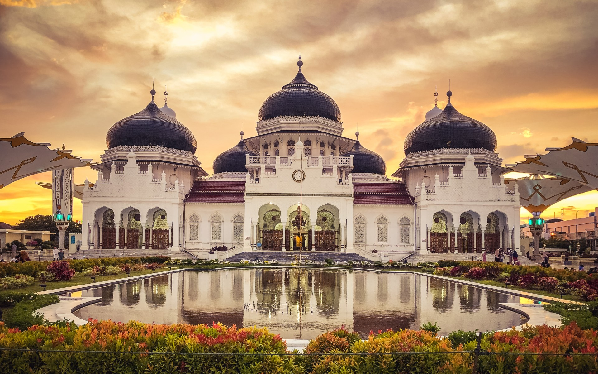
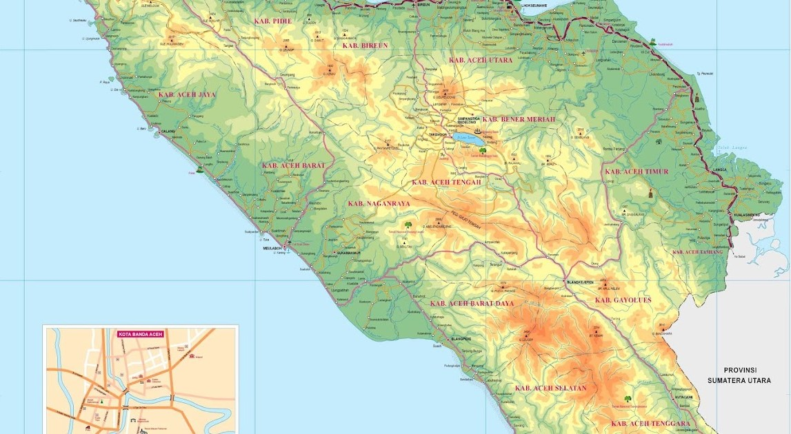

Sejarah

Aceh merupakan sebuah provinsi di Indonesia yang ibu kotanya berada di Banda Aceh. Aceh itu sendiri merupakan salah satu provinsi di Indonesia yang diberikan status sebagai daerah istimewa dan juga diberikan otonomi khusus. Aceh dianggap
sebagai tempat dimulainya penyebaran Islam di Indonesia dan memainkan peran penting dalam penyebaran Islam di Asia tenggara. Pada awal abad ke-17, kesultanan Aceh adalah kerajaan terkaya, terkuat, dan termakmur di kawasan Selat Malaka.
Sejarah Aceh diwarnai oleh kebebasan politik dan penolakan keras terhadap kendali orang asing, termasuk bekas penjajah Belanda dan pemerintah Indonesia. Jika dibandingkan dengan dengan provinsi lainnya, Aceh adalah wilayah yang sangat
konservatif (menjunjung tinggi nilai agama). Persentase penduduk Muslim-nya adalah yang tertinggi di Indonesia dan mereka hidup sesuai syariah Islam.
Asal Nama
Aceh pertama dikenal dengan nama Aceh Darussalam (1511–1945). Provinsi ini dibentuk pada 1956 dengan nama Aceh sebelum diubah menjadi Daerah Istimewa Aceh (1959–2001), Nanggroe Aceh Darussalam (2001–2009), dan kembali ke Aceh sejak 2009.
Sebelumnya, nama Aceh biasa ditulis Acheh, Atjeh, dan Achin.
Zaman Kerajaan Hindu-Buddha
Seperti daerah lainnya di kepulauan Nusantara, Aceh juga pernah mengalami masa perkembangannya agama Hindu dan Buddha yang datang dari daratan benua Asia Selatan (India). Pada masa itu di Aceh telah diwarnai dengan adanya beberapa kerajaan-kerajaan
yang berdasarkan agama tersebut misalnya kerajaan Indra Puri, Kerajaan Indra Patra, dan kerajaan Indra Purwa yang terletak di Aceh Besar yang menganut kepercayaan Hindu dan dipenggaruhi oleh India. Selain itu, Aceh juga dulu termasuk
bagian dari kerajaan-kerajaan Hindu-Buddha yang pernah berjaya di Nusantara ribuan tahun lalu seperti Sriwijaya.
Prasasti Tanjore dari Tamil menyebutkan bahwa pada tahun 1030, kerajaan Lamuri termasuk di antara wilayah yang ditaklukan oleh Rajendra Chola I dari Kerajaan Chola
Masuknya Islam
Masih terjadi silang pendapat terkait persoalan dari sejak kapan Islam pertama sekali disebarkan ke Aceh. Sebagian berpandangan sudah dimulai dari sejak masa kekhalifahan Utsman bin Affan sebagai khalifah ketiga setelah kerasulan Muhammad
SAW.
Terkait Islam yang datang ke Aceh, Snouck Hurgronje dengan teori Gujaratnya menyebut Islam yang datang ke sana bukanlah Islam yang dibawa Muhammad, tetapi Islam yang sudah berkembang matang. Bukan Islam dari al Quran dan Hadits, melainkan
Islam dengan kitab-kitab Fiqh dan dogmanya dari 3 abad kemudian.
Sebagian lagi, ada yang berpandangan bahwa Islam yang datang ke Aceh justru sudah dimulai dari sejak tahun pertama Hijriyah (618 M). Satu pandangan yang menurut penulis buku Tasawuf Aceh merupakan pandangan tidak masuk akal. Alasan yang
dikemukakannya adalah pada masa tersebut ada keyakinan antara wahyu pertama (610 M) dengan wahyu kedua kepada Muhammad selama 2,5 tahun. Ditambah dengan masa berdakwah secara sembunyi-sembunyi yang dilakukan Muhammad selama 3 tahun.
Dengan demikian baru pada tahun ke-7 masa kenabiannya baru dimulai dakwah secara terang-terangan. Tetapi sedikitnya persoalan demikian bisa ditelusuri dari keberadaan kerajaan pertama bercorak Islam di Aceh, Kerajaan Peureulak yang
didirikan pada 1 Muharram 225 Hijriyah.
Kesultanan Aceh
Kesultanan Aceh merupakan kelanjutan dari Kesultanan Samudra Pasai yang hancur pada abad ke-14. Kesultanan Aceh terletak di utara pulau Sumatra dengan ibu kota Kutaraja (Banda Aceh). Dalam sejarahnya yang panjang itu (1496–1903), Aceh
telah mengukir masa lampaunya dengan begitu megah dan menakjubkan, terutama karena kemampuannya dalam mengembangkan pola dan sistem pendidikan militer, komitmennya dalam menentang imperialisme bangsa Eropa, sistem pemerintahan yang
teratur dan sistematik, mewujudkan pusat-pusat pengkajian ilmu pengetahuan, hingga kemampuannya dalam menjalin hubungan diplomatik dengan negara lain.
Aceh Darussalam pada zaman kekuasaan zaman Sultan Iskandar Muda Meukuta Perkasa Alam (Sultan Aceh ke 19), merupakan negeri yang amat kaya dan makmur. Menurut seorang penjelajah asal Prancis yang tiba pada masa kejayaan Aceh pada zaman
tersebut, kekuasaan Aceh mencapai pesisir barat Minangkabau hingga Perak. Kesultanan Aceh telah menjalin hubungan dengan kerajaan-kerajaan di dunia Barat pada abad ke-16, termasuk Inggris, Ottoman, dan Belanda. Kesultanan Aceh terlibat
perebutan kekuasaan yang berkepanjangan sejak awal abad ke-16, pertama dengan Portugal, lalu sejak abad ke-18 dengan Britania Raya (Inggris) dan Belanda. Pada akhir abad ke-18, Aceh terpaksa menyerahkan wilayahnya di Kedah dan Pulau
Pinang di Semenanjung Melayu kepada Britania Raya.
Pada tahun 1824, Persetujuan Britania-Belanda ditandatangani, di mana Britania menyerahkan wilayahnya di Sumatra kepada Belanda. Pihak Britania mengklaim bahwa Aceh adalah koloni mereka, meskipun hal ini tidak benar. Pada tahun 1871, Britania
membiarkan Belanda untuk menjajah Aceh, kemungkinan untuk mencegah Prancis dari mendapatkan kekuasaan di kawasan tersebut.
Perang Aceh
Perang Aceh dimulai sejak Belanda menyatakan perang terhadap Aceh pada 26 Maret 1873, dimulai dari kedatangan Jenderal J.H.R Kohler dengan jumlah pasukan sebanyak 3.198, termasuk 168 perwira KNIL. Setelah melakukan beberapa ancaman diplomatik,
namun tidak berhasil merebut wilayah yang besar. Perang kembali berkobar pada tahun 1883, namun lagi-lagi gagal, dan pada 1892 dan 1893, pihak Belanda menganggap bahwa mereka telah gagal merebut Aceh. Bahkan, pada hari pertama perang
berlangsung, 1 unit kapal perang Belanda, Citadel van Antwerpen harus mengalami 12 tembakan meriam dari pasukan Aceh.
Dr. Christiaan Snouck Hurgronje, seorang ahli yang berpura-pura masuk Islam dari Universitas Leiden yang telah berhasil mendapatkan kepercayaan dari banyak pemimpin Aceh, kemudian memberikan saran kepada Belanda agar serangan mereka diarahkan
kepada para ulama, bukan kepada sultan. Saran ini ternyata berhasil. Pada tahun 1898, Joannes Benedictus van Heutsz dinyatakan sebagai gubernur Aceh, dan bersama letnannya, Hendrikus Colijn, merebut sebagian besar Aceh.
Sultan Muhammad Dawud Syah akhirnya meyerahkan diri kepada Belanda pada tahun 1903 setelah dua istrinya, anak serta ibundanya terlebih dahulu ditangkap oleh Belanda. Kesultanan Aceh akhirnya jatuh pada tahun 1904. Saat itu, Ibu kota Aceh
telah sepenuhnya direbut Belanda. Namun perlawanan masih terus dilakukan oleh Panglima-panglima di pedalaman dan oleh para Ulama Aceh sampai akhirnya jepang masuk dan menggantikan peran belanda. Perang Aceh adalah perang yang paling
banyak merugikan pihak Belanda sepanjang sejarah penjajahan Nusantara.
Masa Penjajahan
Sementara pada masa kekuasaan Belanda, bangsa Aceh mulai mengadakan kerja sama dengan wilayah-wilayah lain di Indonesia dan terlibat dalam berbagai gerakan nasionalis dan politik. Aceh kian hari kian terlibat dalam gerakan nasionalis Indonesia.
Saat Volksraad (parlemen) dibentuk, Teuku Nyak Arif terpilih sebagai wakil pertama dari Aceh. (Nyak Arif lalu dilantik sebagai gubernur Aceh oleh gubernur Sumatra pertama, Mr. Teuku Muhammad Hasan).
Saat Jepang mulai mengobarkan perang untuk mengusir kolonialis Eropa dari Asia, tokoh-tokoh pejuang Aceh mengirim utusan ke pemimpin perang Jepang untuk membantu usaha mengusir Belanda dari Aceh. Negosiasi dimulai pada tahun 1940. Setelah
beberapa rencana pendaratan dibatalkan, akhirnya pada 9 Februari 1942 kekuatan militer Jepang mendarat di wilayah Ujong Batee, Aceh Besar. Kedatangan mereka disambut oleh tokoh-tokoh pejuang Aceh dan masyarakat umum. Masuknya Jepang
ke Aceh membuat Belanda terusir secara permanen dari tanah Aceh.
Awalnya Jepang bersikap baik dan hormat kepada masyarakat dan tokoh-tokoh Aceh, dan menghormati kepercayaan dan adat istiadat Aceh yang bernafaskan Islam. Rakyat pun tidak segan untuk membantu dan ikut serta dalam program-program pembangunan
Jepang. Namun ketika keadaan sudah membaik, pelecehan terhadap masyarakat Aceh khususnya kaum perempuan mulai dilakukan oleh personel tentara Jepang. Rakyat Aceh yang beragama Islam pun mulai diperintahkan untuk membungkuk ke arah
matahari terbit di waktu pagi, sebuah perilaku yang sangat bertentangan dengan akidah Islam. Karena itu pecahlah perlawanan rakyat Aceh terhadap Jepang di seluruh daerah Aceh. contoh yang paling terkenal adalah perlawanan yang dipimpin
oleh Teungku Abdul Jalil, seorang ulama dari daerah Bayu, dekat Lhokseumawe.
Pasca Kemerdekaan Indonesia
Sejak tahun 1976, organisasi pembebasan bernama Gerakan Aceh Merdeka (GAM) telah berusaha untuk memisahkan Aceh dari Indonesia melalui upaya militer. Pada 15 Agustus 2005, GAM dan pemerintah Indonesia akhirnya menandatangani persetujuan
damai sehingga mengakhiri konflik antara kedua pihak yang telah berlangsung selama hampir 30 tahun.
Pada 26 Desember 2004, sebuah gempa bumi besar menyebabkan tsunami yang melanda sebagian besar pesisir barat Aceh, termasuk Banda Aceh, dan menyebabkan kematian ratusan ribu jiwa. Di samping itu, telah muncul aspirasi dari beberapa wilayah
Aceh, khususnya di bagian barat, selatan dan pedalaman untuk memisahkan diri dari Aceh dan membentuk provinsi-provinsi baru.
Darul Islam/Tentara Islam Indonesia
Aceh yang semula bergabung dengan Indonesia dengan jaminan Soekarno akan menerapkan syariat Islam, merasa kecewa karena syariat Islam tidak dijadikan sebagai landasan negara. Sehingga pada tanggal 13 Muharram 1372 H/21 September 1953 M,
Teungku Muhammad Daud Beureu'eh atas nama rakyat Aceh mengumumkan bergabung dengan Negara Islam Indonesia yang didirikan oleh Kartosoewirjo.
Gerakan Aceh Merdeka(GAM)
Pasca gempa dan tsunami 2004, yaitu pada 2005, pemerintah Republik Indonesia dan Gerakan Aceh Merdeka sepakat mengakhiri konflik di Aceh. Perjanjian ini ditandatangani di Finlandia, dengan peran besar daripada mantan petinggi Finlandia,
Martti Ahtisaari.
Budaya
Aceh merupakan kawasan yang sangat kaya dengan seni budaya lazimnya wilayah Indonesia lainnya. Aceh mempunyai aneka kerajian, seni budaya yang khas seperti tari-tarian, dan budaya lainnya seperti:
Kerajinan
- Tas Khas Aceh
- Peci Khas Aceh
- Peci Khas Gayo
- Kasap Aceh
- Kupiah Meukutop
- Kerawang Gayo
Tradisi Adat
- Meuseuke Engkot(sebuah tradisi di wilayah Aceh Barat)
- Peusijuk(atau Tepung tawar dalam tradisi Melayu)
Senjata Tradisional
Rencong adalah senjata tradisional bangsa Aceh, bentuknya menyerupai huruf L, dan bila dilihat lebih dekat bentuknya merupakan kaligrafi tulisan bismillah. Rencong termasuk dalam kategori belati. Selain rencong, bangsa Aceh juga memiliki
beberapa senjata khas lainnya, seperti sikin panyang, peurise awe, peurise teumaga, siwah, geuliwang dan peudeueng.
Rumah Tradisional
Rumah tradisional Aceh dinamakan Rumoh Aceh. Rumah ini bertipe rumah panggung dengan 3 bagian utama dan 1 bagian tambahan. Tiga bagian utama dari rumah Aceh yaitu seuramoë keuë (serambi depan), seuramoë teungoh (serambi tengah) dan seuramoë
likôt (serambi belakang). Sedangkan 1 bagian tambahannya yaitu rumoh dapu (rumah dapur).
Tarian
Aceh memiliki banyak tarian dari 9 etnis yang ada. Beberapa tarian yang terkenal di tingkat nasional dan bahkan dunia merupakan tarian yang berasal dari Aceh, seperti Tari Rateb Meuseukat dan Tari Saman.
Beberapa tarian yang terkenal dari etnis Aceh adalah Seudati, Ratoh Duek, Rateb Meuseukat,Tari Likok Pulo, Pho, Ranup lam Puan, Rapa'i Geleng, Tarek Pukat, Tari Laweuët dan Rabbani Wahed.
Beberapa tarian yang terkenal dari etnis Gayo adalah Saman, Bines, Didong, Guel, dan Munalu.
Tarian-tarian dari etnis lainnya adalah Ula-ula Lembing (Tamiang), Mesekat (Alas), Landok Sampot (Kluet), Dampeng (Singkil) dan Nandong (Simeulue).
Makanan Khas
Aceh mempunyai aneka jenis makanan yang khas. Antara lain Timphan, Gulai Bebek, Kari Kambing yang lezat, Gulai Pliek U dan Meuseukat yang langka. Di samping itu Keurupuk Meuliëng asal Pidie yang terkenal gurih, Dodoi Sabang yang dibuat
dengan aneka rasa, Bu Leukat Boh Driën (ketan durian), serta bolu manis asal Peukan Bada dan Ruti Samahani Aceh Besar juga bisa jadi andalan bagi Aceh.
Di Pidie Jaya terkenal dengan kue khas Meureudu yaitu Adè. Sedangkan di Aceh Utara lazim kita temukan kuliner khas lainnya yaitu Martabak Durian yang lezat. Kuliner Bireuen yang paling terkenal adalah Sate Matang yang merupakan sate daging
sapi atau kambing yang dibakar yang pada awalnya berasal dari kota Matang Glumpang Dua.
Makanan khas Kota Langsa yang sangat terkenal hingga ke seluruh Indonesia adalah Sop Sumsum yaitu berupa sop tulang daging sapi yang berisi sumsum di dalam tulangnya dan tulang daging sapi tersebut telah dipotong untuk dapat dinikmati
sumsumnya menggunakan sedotan atau menuangnya langsung ke atas piring. Sop Sumsum tulang daging sapi ini disajikan panas dengan potongan-potongan daging sapi yang diracik dengan sangat gurih dan lezat menggunakan racikan bumbu khas
Aceh. Lalu ada Gulai Ikan Sembilang yang juga khas Kota Langsa.
Sedangkan di wilayah Kabupaten Aceh Singkil dan juga kota Subulussalam terdapat jenis camilan yang sangat digemari banyak orang. Makanan yang disebut dengan nama lompong sagu, sesuai namanya makanan ini berbahan dasar sagu yang dicampur
dengan pisang, gula merah, dan garam. semua bahan tersebut kemudian dicampur, dan dibungkus dengan daun pisang, hampir mirip dengan lemper. setelah itu, dipanggang menggunakan kompor ataupun tungku. Makanan ini mudah ditemukan di wilayah
Aceh Singkil maupun Subulussalam. Sementara kuliner khas Aceh yang juga sangat terkenal bahkan hingga ke mancanegara adalah Mi Aceh, sejenis mi kuning basah yang diracik dengan bumbu khas nan pedas.
Geografis

Aceh terletak di ujung utara pulau Sumatra dan merupakan provinsi paling barat di Indonesia, di mana titik terluar Negara Kesatuan Republik Indonesia terletak di Pulau Rondo, sementara itu kilometer Nol Indonesia berada di pulau Weh. Secara
geografis Aceh terletak antara 2°–6° lintang utara dan 95° – 98° lintang selatan dengan ketinggian rata-rata 125 meter di atas permukaan laut. Batas batas wilayah Aceh, sebelah utara dan timur berbatasan dengan Selat Malaka, sebelah
selatan adalah satu-satunya perbatasan darat dengan Sumatra Utara dan sebelah barat dengan Samudera Hindia.
Luas Aceh 5.677.081 ha, dengan hutan sebagai lahan terluas yang mencapai 2.290.874 ha, diikuti lahan perkebunan rakyat seluas 800.553 ha. Sedangkan lahan industri mempunyai luas terkecil yaitu 3.928 ha. Cakupan wilayah Aceh terdiri dari
119 pulau, 35 gunung dan 73 sungai utama.
Demografi
Suku Bangsa
Aceh memiliki 12 suku bangsa asli. Yang terbesar adalah suku Aceh yang tersebar hampir merata di seluruh wilayah Aceh terutama mendiami wilayah pesisir mulai dari Langsa di pesisir timur utara sampai dengan Trumon di pesisir barat selatan.
Suku terbesar kedua adalah suku Gayo yang mendiami wilayah Dataran Tinggi Gayo. Suku bangsa lainnya adalah suku Alas yang mendiami Kabupaten Aceh Tenggara, Melayu Tamiang di Aceh Tamiang, suku Aneuk Jamee di wilayah barat dan selatan,
Suku Kluet di Aceh Selatan, dan suku Singkil di Kota Subulussalam dan Kabupaten Singkil.
Di wilayah kepulauan terdapat suku Devayan di Pulau Simeulue bagian selatan, suku Sigulai di utara Simeulue, suku Lekon di Alafan dan suku Haloban di Pulau Banyak. Selain suku-suku asli, juga ditemui suku-suku pendatang seperti Jawa, Minang,
Batak, Arab, Tionghoa, Tamil, Karo, dan Nias.
Hasil sensus penduduk tahun 2000 menunjukkan hasil etnis suku-suku aceh sebagai berikut: Aceh, Gayo, Melayu, Batak, Jawa, Jamèë, Singkil, Devayan, Minangkabau, dan lain-lain[71] Namun sensus tahun 2000 ini dilakukan ketika Aceh dalam masa
konflik sehingga tidak ada data yang pasti/akurat pada masa itu untuk mengetahui populasi per etnis masing-masing & persentasenya. Cakupannya hanya menjangkau kurang dari setengah populasi Aceh saat itu. Adapun urutan suku bangsa diatas
hanya (perkiraan). Masalah paling serius dalam pencacahan ditemui di kabupaten Aceh Timur dan Aceh Utara, dan tidak ada data sama sekali yang dikumpulkan dari kabupaten Pidie. Ketiga kabupaten ini merupakan kabupaten dengan mayoritas
etnis Aceh.
Berdasarkan sensus 2010 di peroleh hasil 10 etnis bangsa terbesar di Aceh, yaitu:
| NO |
Etnis |
Jumlah |
| 1 |
Suku Aceh |
3.160.728 |
| 2 |
Suku Jawa |
399.971 |
| 3 |
Suku Gayo |
322.996 |
| 4 |
Suku Batak |
147.295 |
| 5 |
Suku Melayu Tamiang |
95.152 |
| 6 |
Suku Aneuk Jamee |
62.838 |
| 7 |
Suku Singkil |
49.580 |
| 8 |
Suku Minangkabau |
46.600 |
| 9 |
Suku Devayan |
33.112 |
| 10 |
Lain-lainnya |
89.172 |
Bahasa
Bahasa daerah yang paling banyak penuturnya adalah bahasa Aceh yang dipakai oleh suku Aceh. Selain itu juga terdapat bahasa Gayo, Alas, Kluet, Singkil, Jamee dan Melayu Tamiang.
Di Simeulue terdapat 3 bahasa yaitu bahasa Devayan, Sigulai, dan Leukon. Selain itu juga terdapat bahasa Haloban di Pulau Banyak.
Beberapa bahasa daerah dari bagian Indonesia lainnya juga dipertuturkan oleh sebagian penduduk di Provinsi Aceh. Di antaranya, yaitu bahasa Jawa yang tersebar di berbagai wilayah transmigrasi di seluruh Aceh.
Agama
Mayoritas penduduk Aceh menganut agama Islam dan Syariah Islam menjadi hukum positif di daerah istimewa Aceh. Agama lain yang dianut oleh penduduk Aceh adalah agama Kristen yang dianut oleh pendatang beretnis Batak, warga keturunan Tionghoa
yang kebanyakan beretnis Hakka mayoritas menganut agama Buddha, sebagian memeluk Kristen, sedangkan sebagian lainnya menganut agama Konghucu, lalu ada agama Hindu yang dianut oleh pendatang beretnis Bali dan sebagian peranakan (Orang
Keturunan India-Tamil/Hindi) yang cukup sedikit populasinya.
Selain itu Aceh memiliki keistimewaan dibandingkan dengan provinsi yang lain, karena di Aceh Syariat Islam diberlakukan kepada sebagian besar warganya yang menganut agama Islam, berdasar UU No.18/2001. Kalangan intelektual Aceh sendiri
masih memperdebatkan apakah yang diberlakukan di Aceh sudah benar-benar syariat atau itu cuma karena alasan politis saja.
Alasan yang juga kemudian disebutkan adalah kondisi konkret ketika itu berkenaan dengan politik, polemik di kalangan jumhur ulama soal bisa tidaknya hukum Islam diproduksi pasca kenabian selain persoalan dualisme aliran dalam Islam, dua
aliran besar dalam tradisi tafsir hukum Islam.
Pendidikan
Dalam hal pendidikan, sebenarnya provinsi ini mendapatkan status Istimewa selain dari D.I. Yogyakarta. Akan tetapi perkembangan yang ada tidak menunjukkan kesesuaian antara status yang diberikan dengan kenyataannya. Pendidikan di Aceh
dapat dikatakan terpuruk. Salah satu yang menyebabkannya adalah konflik Aceh yang berkepanjangan, lalu musibah gempa dan tsunami serta penganaktirian oleh Pemerintah Pusat, dengan sekian ribu sekolah dan institusi pendidikan lainnya
menjadi korban. Pada Ujian Akhir Nasional 2005 ada ribuan siswa yang tidak lulus dan terpaksa mengikuti ujian ulang.
Namun dalam beberapa tahun terakhir, Pemerintah Aceh melalui Dinas Pendidikan Aceh terus berusaha keras untuk mendongkrak dan membangkitkan taraf pendidikan di Aceh. Peningkatan mutu pendidikan merupakan upaya untuk mewujudkan "Aceh Caroeng
/ Aceh Hebat", sehingga pada Ujian Nasional Berbasis Komputer (UNBK) yang dilaksanakan pada tahun 2019 di Aceh tersebut dinyatakan sebagai satu dari tujuh provinsi di Indonesia yang menyelenggarakan UNBK 100 persen.
Aceh juga memiliki sejumlah perguruan tinggi yaitu:
Perguruan Tinggi Negeri
Berikut adalah daftar perguruan tinggi negeri terkemuka yang ada di Aceh:
- Universitas Syiah Kuala
- Universitas Islam Negeri Ar-Raniry
- Universitas Malikussaleh, Aceh Utara
- Universitas Samudra Langsa
- Universitas Teuku Umar, Melaboh
- Universitas Terbuka, Aceh
- Institut Agama Islam Negeri Lhokseumawe
- Institut Agama Islam Negeri Langsa
- Institut Agama Islam Negeri Takengon
- Institut Seni Budaya Indonesia Aceh
- Politeknik Negeri Lhokseumawe
- Politeknik Kesehatan Kemenkes Aceh
- Sekolah Tinggi Agama Islam Negeri Teungku Dirundeng Meulaboh
Perguruan Tinggi Swasta
Berikut adalah daftar perguruan tinggi swasta terkemuka yang ada di Aceh:
- Universitas Serambi Mekkah, Banda Aceh
- Universitas Muhammadiyah Aceh, Banda Aceh
- Universitas Iskandar Muda, Banda Aceh
- Universitas Ubudiyah Indonesia, Banda Aceh
- Universitas Bina Bangsa Getsempena, Banda Aceh
- Universitas Abulyatama, Aceh Besar
- Universitas Almuslim, Bireuen
- Universitas Islam Kebangsaan Indonesia, Bireuen dan Lhokseumawe
- Universitas Sains Cut Nyak Dhien, Langsa
- Universitas Jabal Ghafur, Pidie
- Universitas Gajah Putih, Aceh Tengah
- Universitas Gunung Leuser, Aceh Tenggara
- Institut Agama Islam Almuslim
- Institut Agama Islam Al-Aziziyah
- Politeknik Aceh
- Politeknik Aceh Selatan
- Politeknik Indonesia Venezuela
- Politeknik Kutaraja
- Politeknik Pelayaran Malahayati
Pariwisata
Di Aceh terdapat banyak destinasi wisata dan objek bersejarah yang bisa dikunjungi. Diantara destinasi wisata dan objek bersejarah yang terbaik yaitu:
Destinasi Wisata
- Tugu Nol Kilometer
- Pantai Iboih
- Taman Bustanussalatin
Objek Bersejarah
- Masjid Raya
- Benteng Indra Patra
- Museum Tsunami Aceh
Tokoh Aceh
Pahlawan
Suku Aceh merupakan suku yang gigih dalam mempertahankan kemerdekaannya. Kegigihan perang Suku Aceh, dapat dilihat dan dibuktikan oleh sejumlah pahlawan (baik pria maupun wanita), serta bukti-bukti lainnya (empat jenderal Belanda tewas
dalam perang Aceh, serta kuburan Kerkoff Peucut yang pernah mencatat rekor sebagai kuburan Belanda terluas di luar Negeri Belanda).
- Pahlawan Perempuan
- Cut Nyak Dhien
- Cut Nyak Meutia
- Laksamana Keumalahayati
- Pahlawan Pria
- Sultan Iskandar Muda
- Teungku Chik Di Tiro
- Teuku Umar
- Teuku Nyak Arif
- Mr. Teuku Muhammad Hasan
Tokoh Asal Aceh
Daftar tokoh Aceh adalah daftar yang berisi nama tokoh-tokoh yang berasal dari provinsi Aceh, baik yang dari etnis Aceh maupun etnis lain yang lahir di provinsi Aceh itu sendiri.
Berikut daftar Tokoh Aceh:
- Hasan di Tiro
- P. Ramlee
- Tun Sri Lanang
- Teungku Fakinah
- Hamzah Fansuri